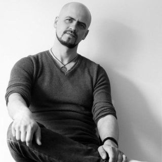

rsschool-2019Q1-cv
Mikhail Shemchuk

Contacts:
- Tel.: +375 29 714-54-74 (Vel)
- E-mail: mihey.by@gmail.com
- Skype: mihey.by
Summary
My first goal - to explore the profession of web-developer. I would like to work in a team of professionals, in a friendly and confidential atmosphere. We will sing 'Kumbaya' and worship cats together. My strength: communicability, calmness, responsibility, management skills. I have like swimming, riding a bike, to play guitar, and other activities. Several years engaged in social dance (Blues, Salsa, Bachata, Lindi-Hop). Not married.
Skills
- JS
- HTML5 / CSS3
- SQL
- Git
- Figma
- С / C++
- Delphi
- Java
- Tomcat
- SQLite
- VB
- Windows
- Linux
Code sample
/**
* @param preferences - an array of integers. Indices of people, whom they love
* @returns number of love triangles
*/
module.exports = function getLoveTrianglesCount(preferences = []) {
let count = 0;
preferences = preferences.map( item => item - 1);
for (let i = 0; i < preferences.length; i++) {
first = preferences[i]; //whom love first lover
second = preferences[first]; //whom love second lover
third = preferences[second]; //whom love third lover
//if 3rd lover love 1st lover in chain - then it's a love triangle
if ((i == third) && (first != second) && (second != third)) {
preferences[i] = -1; //exclude this triangle from cheking
preferences[first] = -1;
preferences[third] = -1;
count++;
}
}
return count;
};
Experience
- 2014-2018 - IT-Administrator of Vitebsk Department "Atlant-Telecom"
- 2018-2019 - Leading technical support specialist of Vitebsk Department Unitary Enterprise A1
- Since 2019 - Individual entrepreneur
Development and supervising of the following systems:
- 2012 - software for cashboxes on Delphi (create modules and DLL).
- 2015 - client-server application to automate the collection and storage of data from impulse meters OWEN SI8 in the poultry workshop of "Vitkonproduct" JLLC (Delphi);
- 2016 - client-server application software for automation, collection and storage of feed weight in the bunker of poultry house of the chicken breeding workshop "Vitkonproduct" JLLC (Delphi);
- 2017 - supervising the development and implementation of software for automating the collection and storage of temperature data in production facilities from WellPro Modbus controllers in the poultry shop "Vitkonproduct" JLLC;
- 2018 - supervising the development and implementation of software for automating product weighing and printing barcodes on labels in the poultry workshop of "Vitkonproduct" JLLC;
- 2019 - supervising the development and implementation of software for automating product weighing in the "Tolochin Butter and Cheese Factory" OJSC;
Education
- 2002-2006 - Vitebsk State Polytechnic College - "Information technology software"
- 2017 - Training "Java Web Application Development" (Epam)
- 2017 - English courses in school "Light English" (Vitebsk)
- 2018 - English courses in school "English Papa" (Vitebsk)
- 2019 - HTML / CSS Basics: https://www.codecademy.com/users/6086549107/achievements
- 2020 - Individual English lessons
English level
- B2 Upper Intermediate
- Watch movies in English, listen audiobooks (my favorite - "Harry Potter"), read books.